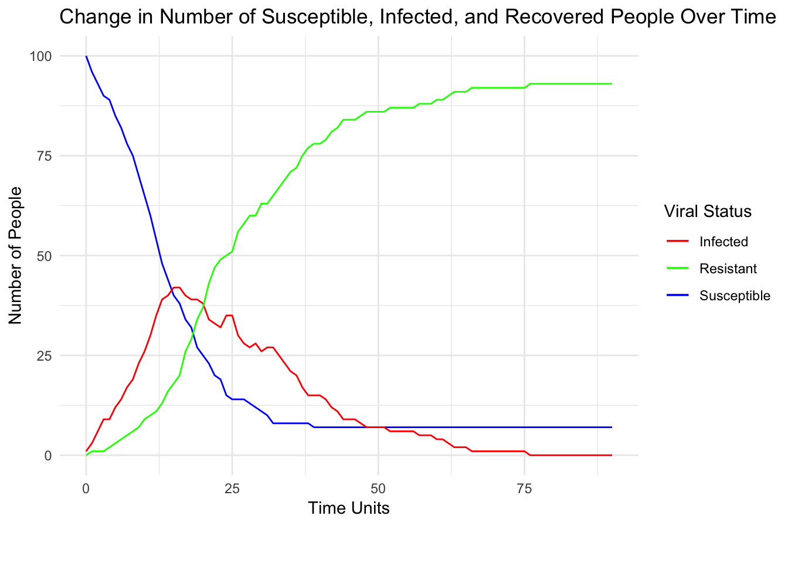
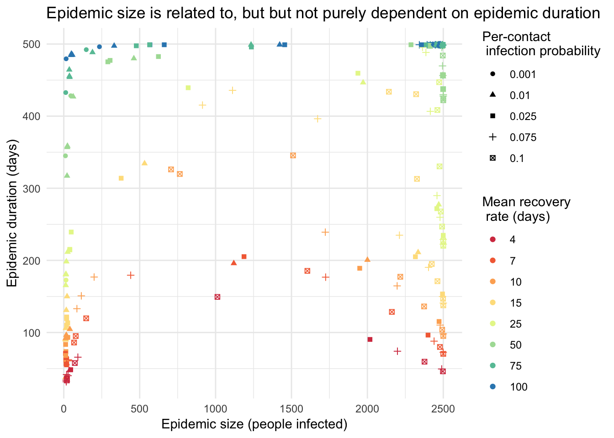

As part of my work as a research assistant in the Bansal Lab, I build both predictive and explanatory models of infectious disease transmission. For this final class project1, we visualized one of these models of disease transmission through a simulated population. We used a Susceptible-Infected-Recovered (SIR) model to simulate stochastic individual tranmission and recovery with discete time steps in a network (structured as a two-dimensional lattice of 100 nodes). I generated all network2 and disease transmission data using Python.
Effective disease modeling is a poweful tool, allowing for targeting of scarce resources (e.g. limited Ebola vaccine in the currect DRC outbreak3). It can also provide insight, explaining complex global phonemena in a systematic way4. Even a model as simple as this one provides valuable intuition about disease dynamics.
library(tidyverse)
susceptible_data <- read_csv("susceptible_time_series.csv") %>%
rename(Time = X1)
infected_data <- read_csv("infected_time_series.csv") %>%
rename(Time = X1)
resistant_data <- read_csv("resistant_time_series.csv") %>%
rename(Time = X1)
combined_data <- read_csv('combined_data.csv')
SIR_data <- full_join(susceptible_data, infected_data, by = "Time")
SIR_data <- full_join(SIR_data, resistant_data, by = "Time") %>%
rename('Susceptible' = '0.x', "Infected"='0.y', 'Resistant'='0')for(n in network.vertex.names(network)){
status_list <- c(status_list, if_else(as.logical(newin(n, susceptible[,index])), 'Susceptible', if_else(as.logical(newin(n, infected[,index])), 'Infected', 'Resistant')))
color_list <- c(color_list, if_else(as.logical(newin(n, susceptible[,index])), 'blue', if_else(as.logical(newin(n, infected[,index])), 'red', 'green')))
}
network %v% 'Infection Status' <- status_list
pal <- c('Susceptible' = 'Reds', 'Infected'='green,', 'Resistant'='blue')
disease_network <- ggnet2(network,
color=color_list,
node.size=5)In this gif, you can watch the disease spread through the population and then see it eventually fade out once enough people recover. Susceptible people are blue, infected are red, and recovered (and therefore immune) people are green. The time series plot of this outbreak is immediately below the gif.
ggplot(SIR_data)+
geom_line(aes(x = Time,
y = Susceptible,
color = "Susceptible")) +
geom_line(aes(x = Time,
y = Infected,
color = "Infected")) +
geom_line(aes(x = Time,
y = Resistant,
color = "Resistant")) +
labs(title = "Change in Number of Susceptible, Infected, and Recovered People Over Time",
x = "Time Units\n\n",
y = "Number of People") +
scale_x_continuous(limits=c(0, 90)) +
scale_color_manual(values=c("Susceptible" = "blue", "Infected" = "red", "Resistant" = "Green"),
name = "Viral Status") +
theme_minimal()
pal <- heat.colors(8, alpha=1)
ggplot(combined_data)+
geom_point(aes(episize, epidur, shape=as.factor(tau), color=as.factor(1/gamma)))+
scale_color_brewer('Mean recovery \n rate (days)', palette = "Spectral")+
theme_minimal()+
labs(title='Epidemic size is related to, but but not purely dependent on epidemic duration', x='Epidemic size (people infected)', y='Epidemic duration (days)', shape="Per-contact \n infection probability")## Warning: Removed 68 rows containing missing values (geom_point).
Here we observe that, across a range of disease types, the epidemic behavior is roughly similar. This indicates that infections are propogating in similar ways. Why is this important to observe? This information allows us to think structurally about how diseases are spreading, and therefore can help us create and implement effective public health policy. This information will make it easier to answer questions like, ``Where do we most effectively distribute our limited supply of vaccines to protect the most number of people?"
This page is a revision the the class’ final project with Evie Boland and Miranda Gabriel↩
Using networkx in Python↩
Worden, L., Wannier, R., Hoff, N. A., Musene, K., Selo, B., Mossoko, M., … & Rimoin, A. W. (2018). Real-time projections of epidemic transmission and estimation of vaccination impact during an Ebola virus disease outbreak in the Eastern region of the Democratic Republic of Congo. arXiv preprint arXiv:1811.01175., Robert, A., Camacho, A., Edmunds, W. J., Baguelin, M., Tamfum, J. J. M., Rosello, A., … & Eggo, R. M. (2018). Effect of vaccinating health care workers to control Ebola virus disease: a modelling analysis of outbreak data. BioRxiv, 113506.↩
Colizza, V., Barrat, A., Barthélemy, M., & Vespignani, A. (2006). The role of the airline transportation network in the prediction and predictability of global epidemics. Proceedings of the National Academy of Sciences, 103(7), 2015-2020.↩